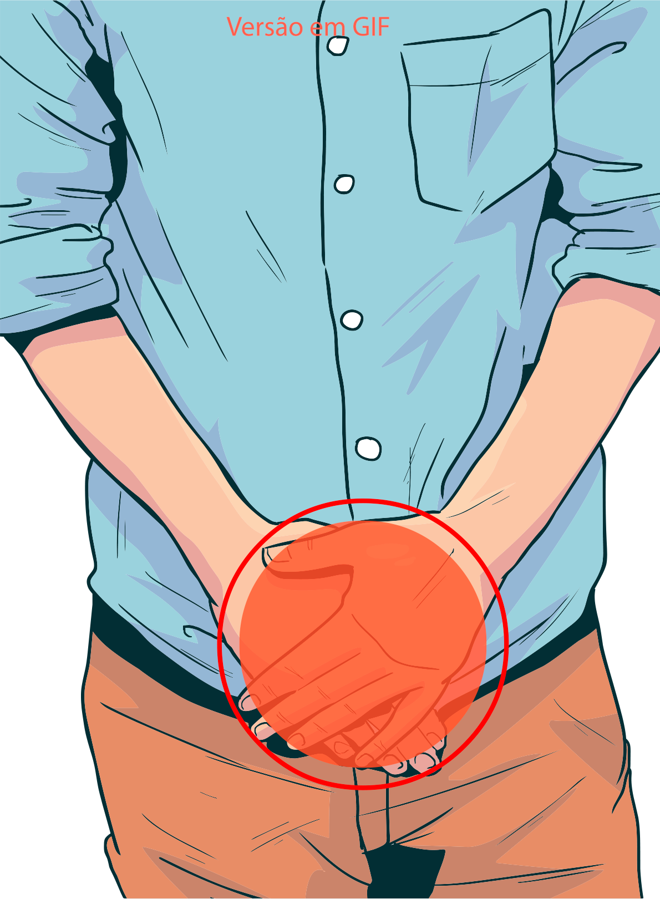

Infecções que causam corrimento uretral
Uretrite é a denominação utilizada para caracterizar inflamações da uretra, quase sempre, de natureza infecciosa. No homem, elas são caracterizadas pela presença de corrimento uretral. Elas podem ser transmitidas pela relação sexual vaginal, anal e oral.
O corrimento uretral costuma ter aspecto, coloração e volume variáveis, a depender do agente causador da infecção. As queixas incluem dor uretral (independentemente da micção), dificuldade de urinar, sendo a micção lenta e dolorosa, coceira na uretra e vermelhidão.